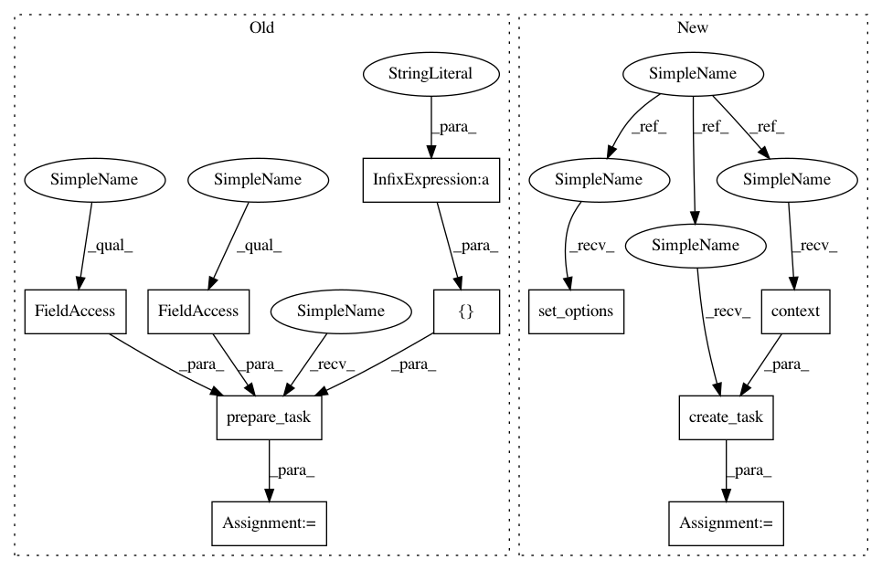

d71c53e4ef8c779d08afe546adb820618335f5f1,tests/python/pants_test/tasks/test_jar_publish.py,JarPublishTest,test_publish_local_dryrun,#JarPublishTest#,129
Before Change
targets = self._prepare_for_publishing()
with temporary_dir() as publish_dir:
task = self.prepare_task(args=["--test-local=%s" % publish_dir],
build_graph=self.build_graph,
build_file_parser=self.build_file_parser,
targets=targets)
self._prepare_mocks(task)
task.execute()
// Nothing is written to the pushdb during a dryrun publish
After Change
assert "Repository internal has no" in str(e)
raise e
def test_publish_local_dryrun(self):
targets = self._prepare_for_publishing()
with temporary_dir() as publish_dir:
self.set_options(local=publish_dir)
task = self.create_task(self.context(target_roots=targets))
self._prepare_mocks(task)
task.execute()
// Nothing is written to the pushdb during a dryrun publish
In pattern: SUPERPATTERN
Frequency: 3
Non-data size: 10
Instances
Project Name: pantsbuild/pants
Commit Name: d71c53e4ef8c779d08afe546adb820618335f5f1
Time: 2015-02-27
Author: benjyw@gmail.com
File Name: tests/python/pants_test/tasks/test_jar_publish.py
Class Name: JarPublishTest
Method Name: test_publish_local_dryrun
Project Name: pantsbuild/pants
Commit Name: d71c53e4ef8c779d08afe546adb820618335f5f1
Time: 2015-02-27
Author: benjyw@gmail.com
File Name: tests/python/pants_test/tasks/test_jar_publish.py
Class Name: JarPublishTest
Method Name: test_publish_local
Project Name: pantsbuild/pants
Commit Name: d71c53e4ef8c779d08afe546adb820618335f5f1
Time: 2015-02-27
Author: benjyw@gmail.com
File Name: tests/python/pants_test/tasks/test_jar_publish.py
Class Name: JarPublishTest
Method Name: test_smoke_publish
Project Name: pantsbuild/pants
Commit Name: d71c53e4ef8c779d08afe546adb820618335f5f1
Time: 2015-02-27
Author: benjyw@gmail.com
File Name: tests/python/pants_test/tasks/test_jar_publish.py
Class Name: JarPublishTest
Method Name: test_publish_local_dryrun